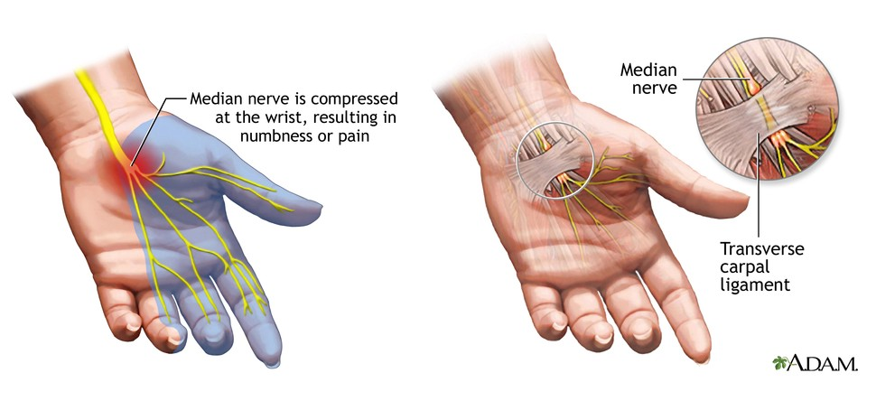

Safety in the workplace
Safety in the workplace is very important to keep the worker healthy and working as much as they can. Some ways to keep a worker/yourself safe are:
- Top of monitor at or just below eye level
- Head and neck balanced and in-line with torso
- Shoulders relaxed
- Elbows close to body and supported
- Lower back supported
- Wrists and hands in-line with forearms
- Adequate room for keyboard and mouse
- Feet flat on the floor
In the workstatins in our classroom many of these aren't/can't be done:
- Head and neck balanced and in-line with torso
- Shoulders relaxed
- Elbows close to body and supported
- Wrists and hands in-line with forearms
A great reason these aren't followed is because people don't understand the long lasting damage this can cause to your body and wrists like Carpal Tunnel Syndrome
Ways we could fix this are
- Get new chairs that don't only support your lower back promoting leaning, and have arm rest to rest elbows on and promote keeping your elbows close to your person while keeping shoulders relaxed
- Learn the dangers of having your wrist pointed up, doing so can lead to Carpal Tunnel Syndrome
Sources:
Carpal Tunnel Syndrome
Workers rights
Young workers
Click here to go back to the main home page